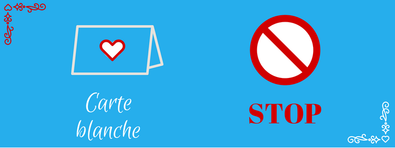
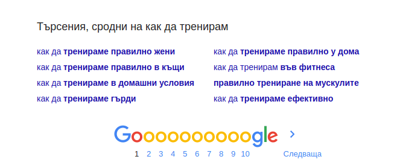

Над 20 начина да валидирате бизнес идеята си
Някои хора, може и вие да сте сред тях, предпочитат да се втурват в бизнеса без да правят предварителни проучвания, за да запазят устрема си. Но преди да намерите фабрика или разработчик и да хвърлите сума ти пари, време и работа напразно, няма да е зле да опипате почвата.
Или напротив, може и да се изненадате, че вашата идея, за която си казвате, че е неизпълнима, има потенциал. Донякъде е вярно, че пазарът в България е малък, но може да започнем на дребно и да правим износ или да си направим онлайн бизнес от всяка точка. В наше време, може да имаме всякакъв бизнес от коя да е част на света.
Ако пък искате да протакате, съм ви подготвила идеалното извинение. Но също така се надявам, че чрез тези упражнения идеята ви ще придобие плътност докато в един момент няма да устоите да се захванете с осъщестяването ѝ. Или ще я зарежете и няма да заема място в мисленото ви чекмедже.
Тези идеи за валидиране са приложими както ако сте наети някъде и са ви възложили нов проект, но все пак докато писах имах предвид по- скоро за странични занимания и бизнеси. Ако работите за по- голяма организация, най- вероятно ще имате повече данни и ресурси на разположение, затова потърсете ги и ги използвайте вместо или в помощ на валидирането.
За по- сигурно, изберете и комбинирайте поне два от методите за валидация по- долу, за предпочитане един проучвателен (анкети, посещения на събития, търсене по ключови думи), а друг- тестов (статии, мини оферта, MVP).
ОБМИСЛЕТЕ ПОДРОБНОСТИТЕ
SWOT анализ
Неслучайно този инструмент се появява навсякъде и особено в бюрократични документи, но SWOT ви казва какво може да е вашето нечестно предимство. Освен това, той може да ви помогне да си поставите цели- за операциите, хората и растежа. За да обмислите идеята си, направете SWOT анализ както на вътрешнофирмените (SW), така и на пазарните (OT) особености.
Ето и кои са елементите на SWOT анализа:
Силните и слаби страни са вътрешни характеристики на организацията ви или екипа ви, дори и да се състои само от вас и отвреме- навреме помощ от роднини и приятели при опаковането или със счетоводството например.
Възможностите и заплахите произтичат от средата или контекста, в които се намирате. Става дума за тенденции в индустрията или на пазара, както и с какво се конкурирате.
Бизнес модел
Подробни резултати, но в повече детайли ще получите, ако си направите бизнес модел. Той ще ви позволи да отговорите на важните въпроси, свързани с продукт, клиенти и доставки. Тъй като бизнес моделът обхваща цялата верига плюс нормалните операции като производство и продаване може да придобиете по- добра представа за дейностите, които ще е необходимо да извършвате, ако се заемете сериозно. А и канвата обръща внимание на финансите, което е задължително упражнение, за да добиете представа за устойчивостта на начинанието си.

Изтеглете канвата за бизнес модел оттук.
Списък с конкуренти и с клиенти
Обикновено най- големият противник за вниманието на потенциалните ви клиенти не са фирмите, извършващи същата дейност, а други алтернативни занимания или нищо. Да, нищо- да минат без вашия продукт или да сглобят нещо в Excel или с подръчни средства. Например телевизионерите не се борят само с конкурентния канал, а най- вече с интернет или дори ресторантите, където може да вечеряте вместо да сте пред екрана. Все пак има смисъл да направите списък с конкуренти и места, където се събират потенциални клиенти. Ако са доста това може да означава, че има интерес към услугата, която обмисляте да предлагате. Това ви показва достатъчно голям ли е пазарният дял, сега и за в бъдеще. Помага ви и при позиционирането. Къде е дупката? Коя група, която вие познавате по- добре не е достатъчно обслужена? Къде може да намерите идеалните си клиенти?
Спецификация
Писането не само ви помага да документирате идеите си, но и да ви хрумнат нови. Напишете супер подробна спецификация, независимо дали се отнася за приложение или физически продукт, та дори и услуга. Включете подробности относно как ще изглежда, как се държи продукта ви и дори как ще се чувстват ползвателите му. Ако става дума за услуга, може да пробвате да опишете процеса си вместо това, т.е. как ще протича стъпка по стъпка. Докато ги изработвате, нищо чудно да откриете, че нещо не е ясно, липсва или трябва да се промени. Преди да се отдадете на писането, започнете със секциите, дори да ви се струва, че не всички са нужни поне за момента, и после ги запълнете. Може да намерите образец онлайн и да го пригодите за частния си случай.
Презентация
Няма никой по- критичен и скептичен от хората, на които искате пари. Няма и по- заети. Затова те обичат информацията да им се излага стегнато, убедително и образно. Дори и засега да сте сам воин, направете презентация, като че ли ще представяте пред бъдещи инвеститори. Отделете не повече от 15-20 слайда за всички аспекти на бизнеса. Така хем имате достатъчно място да се разпростирате и проучвате, хем ограниченията ви ще ви накарат да изберете същественото. Може да сложите един слайд за екипа, проблема, решението (технология), продукта, клиентите (модел на приходите, сегмент), конкурентите (пазар и индустрия), както и за маркетинга и финансите. Тук пак може да ползвате темплейт.
Оферта
След като сте обмислили общата картина- историята ви и какво искате да постигнете в бъдеще, помислете как може да го представите nа евентуални клиенти. Отделете време да опишете най- важните точки или ползи на продукта ви, все едно че е вече съществуващ. Помислете какво е уникалното на офертата ви: нивото на услугата, бонуси, рядки умения. Още избройте какви са конкретните ползи отвъд очевидното- ще имат повече време, спокойствие или престиж. Помислете как вашият продукт се вписва в ежедневието на ползващите го. Какво е основното ви рекламно послание? Докато например спецификацията ще ви е полезна повече за производството, задачата на описанието на продукта е да привлича. Затова трябва да се поставите на мястото на някой напълно незапознат с вашата идея. Не наблягайте на въображението, а на яснотата. Ако ви е по- лесно, най- напред избройте всичко това в подточки.
Пет причини
Не само пазарът определя дали ще успеете в начинанието си. Избройте поне пет причини някой да повярва, че може да се справите. Сами ли сте го изпитали? Имате ли зад гърба си определен брой клиенти или години опит? Как квалификацията ви е свързана с идеята ви? Готови ли сте да предложите основната услуга най- малко на нивото на конкурентите ви? А какво по- различно предлагате? При достатъчно ентусиазъм, страст и средства, всичко може да ви изненада и да пожъне успех. Хората печелят пари и от най- странните предложения: камък за домашен любимец, блестяща бомба и така нататък.
ИМАЙТЕ КАКВО ДА ПОКАЖЕТЕ
Минимален жизнеспособен продукт (MVP)
Ние, човеците понякога имаме диво и красиво въображение, но за да го провокираме ни трябва някаква кукичка. От няколко линии може да си представим рисунка, от част- машината или от няколко изречения- книга, но все пак трябва да изрисувате линиите, думите или да започнете да изграждате продукта си.
Затова за да тествате идеята си, изградете скелета на продукта ви, така наречения MVP—minimum viable product. Това може разбира се да е продукт сведен до най- необходимите компоненти, но също така продукт, който прилича на замисленото от вас. Ако разликата не е видима, а при ползването, може да лепнете логото си на съществуващ продукт на конкурента като преправите още някои елемента. За приложение може да е формуляр с ръчно обработване на данни, което не би било възможно с повече ползватели, но показва как ще функционира. Може да е видео симулация, страница за резервации или за препоръки, супер изгодна оферта в точно подбрана група.
Задачата на MVP-то е да провери дали има пазарна нужда. Не е необходимо да има всички екстри, а само основната функционалност. Не е необходимо да ви донесе повече пари, отколкото сте вложили. Не е необходимо да е красиво.
Чрез минималния, но и полезен продукт най- бързо и най- евтино може да измерите резултатите и да се поучите, както и да предадете продукта в ръцете на най- ранните ви клиенти.
Но не пестете усилия и отидете лично при ползвателите или рекламодателите, които биха се заинтересували, а не чакайте да ви намерят. Шансът да стане е незначителен.
Прототип
Ако решението ви е по- иновативно и невиждано, опишете теорията, направете постъпки за патентоване на изобретението си и намерете голема компания, с която да си партнирате, за изработване на прототипа. Освен ресурсите, това ще ви предостави достъп до опитни инженери и дори пазар. Друг вариант е да проектирате модел (или да платите на студент да пренесе скиците ви в 3D програма), да намерите 3D принтер и воала… имате първия си прототип. След това преправяте докато се получи както трябва, а за първите стотина бройки може да намерите малък производител. А ако начинанието потръгне, евентуално да поискате да изнесете продукцията в Китай, където е работилницата на света.
Веднъж като сте наясно с вашето послание, вашата мрежа, срещнете се с истински хора в зависимост от…
ШИРОКА ИЛИ СПЕЦИАЛИЗИРАНА ПУБЛИКА
Среща на по кафе
Колкото по- директно общувате с потенциалните ви клиенти, толкова повече нюанс може да доловите. Затова, въпреки че за повечето хора би било стряскащо, първо трябва да ви препоръчам да идете в McDonalds или Starbucks и да купите кафе на който се съгласи да ви изслуша. Когато говорите за идеята си, един трик да кажете, че идеята е на ваш приятел или роднина примерно, за да получите по- честни оценки. Или ако това ви се струва нечестно, кажете, че са ви натоварели с тази задача. Кой? Самите вие, но едва ли някой ще пита. Този метод се прилага ако се целите в широката общественост.
Събития
Ако пък знаете индустрията, но не конкретната оферта, най- удачно е да посетите специализирани изложения, конференции или други събития и да слушате. Какви са най- големите проблеми, пред които са изправени събеседниците ви.
Ако представата ви е по- ясна, вместо да оформяте идеята си, може направо да я тествате. На сайта Meetup намерете местни събития, направете си визитки и ги раздайте на посетителите, които са заинтересувани. Стремете се не да прехвърчате измежду хората, а да обърнете внимание на тези, които ви се струва, че имат най- голяма нужда от това, което предлагате. И се свържете с тях по- късно, не чакайте!
ПРОУЧЕТЕ ПАЗАРА
За какво ви търсят съвет?
Ако търсите допълнителна работа, помислете за какво ви плащат вече съседи или колеги било то ръчно изработени бижута, разхождане на домашни любмици или оправяне на счетоводството им. Ако познатите ви се нуждаят от такива услуги, шансът други хора да се нуждаят от същото се увеличава. Дори да не им взимате пари, помислете с какви въпроси или молби идват познатите при вас, колкото и да не ви прилича на бизнес.
Намерете партньор
Ако сте сигурни, че има търсене, но не ви се занимава или не ви бива в намирането на клиенти, намерете специалист с умения, които са допълващи на вашите: уеб разработчик и дизайнер, копирайтър и фотограф, преводач и адвокат, моделиер и бижутер, готвач и сладкар и така нататък. След това може да се комбинирате, за да предложите по- цялостна услуга. Те ще ви кажат какво точно се търси. Дори може да ви препращат клиенти.
Търсете по ключови думи
В днешно време все повече от живота и бизнеса ни е онлайн, така че проверете колко пъти на ден се търсят ключовите ви думи в Google Trends. Също погледнете какви сродните търсения ви се показват на дъното на резултатите.
Опитайте да разберете какви проблеми се опитват да решат хората- обикновено тези търсения започват с “как да…”. Вижте още дали има спонсорирани линкове, което е добър знак, както в google и facebook, така и в youtube и други платформи, където се пускат реклами.
Подслушайте
Добре пазена тайна на маркетолози, рекламисти и немалко хора на изкуството е, че се захранват с данни и креативност като подслушват чуждите разговори.
Подслушайте на живо, докато се разхождате по улиците, в градския транспорт или по кафенетата.
Подслушайте какво си говорят онлайн потенциалните ви клиенти- вижте специализираните форуми или Facebook или LinkedIn групи, поскролвайте из рецензиите в Amazon или други електронни магазини. Забележете за какво се оплакват, какви кусури намират на поднесената информация или продукт, които вие ще искате да избегнете, но обърнете внимание и какво им харесва и какво ги впечатлява.
Вашата задача не е да питате какво мислят за продукта или услугата ви, а да разберете повече за ежедневието или работата им, също и какво решение са ползвали досега или как са игнорирали проблема. Разберете кой аспект на проблема намират за най- предизвикателен.
ИЗЯСНЕТЕ КАКВО ПРЕДЛАГАТЕ
Изяснете посланието си
Ако сте започнали вече някаква дейност, проучете как говорят клиентите ви: обърнете внимание как това, което си мислите, че предлагате се разминава с техните представи. Търсете възможности за промяна на гледната точка или позиционирането на офертата ви, за да е по- ясна и по- конкретна. Ако сте коуч, не казвайте само, че с услугата ви ще подобрите живота им, а как точно. Чрез медитация? Подобряване на комуникацията? Ако искат да си намерят половинка, може би трябва да им помогнете да подредят живота, финансите и приоритетите си, но малцина ще са привлечени от това послание. Може по- добре да знаете от какво се нуждаят истински клиентите, на които може да помогнете най- много, но преди това трябва да ги привлечете с това, което желаят.
Ако пък имате повече от една публика, помислете как да ги накарате да разберат уникалните предимства за хора в тяхната ситуация. Например от почистване имат нужда както родители, така и заети професионалисти. Услугата може и да е същата, но едните може да ги интересуват повече дали препаратите ви са безопасни за деца или цената, а другите може да не искат да се налага да се занимават с подробности веднъж след като са ви наели, което значи, че трябва да сте си изработили ефективен процес и да си личи.
Изяснете проблема
Направете списък с типовете хора, които имат тези проблеми, на които имате решение, и си признайте към кои сте привлечени най- много. Щом познавате и сте ентусиазирани да работите с някой, всичко минава в пъти по- гладко. Не се осланяйте на аватари с куп подробности без връзка с услугата, която предлагате. Помислете каква работа вършите на клиента, какво може и ще включва офертата ви и какви по- особени нужди има конкретно вашата публика.
За целта направете списък с 3 главни подпроблема, които искате да решите. Съвпадат ли с тези на хората, в които се целите? Ако има разминаване между това, какво искат клиентите и какво продавате дори да изпълните обещанието си, отсрещната страна може да е неразбрала и/ или недоволна. Затова възможно по- рано (но когато сте по- сигурни в себе си), намерете ги и им задавайте въпроси. Може да се наложи да натъкмите предлаганото, но това е ОК. Част от деловитостта!
Анкети
Да търсите мнение или информация е по- ефективно ако питате по- ангажирани хора с проблема, който решавате. Такива са например настоящите ви клиенти, ако имате такива (дори да са единствени или само познати) или хора, които страдат тежко от проблема. Но дори и да не се сещате за такива, все пак може да пробвате да направите и попълните въпросник. Питайте не за вашето конкретно решение и дали биха го купили, а на кой етап се намират, как се справят с тази част от живота, какви са най- важните характеристики, по които избират. Спрете се на някой ъгъл и разпитвайте минувачите или предложете онлайн анкета срещу ваучер за Amazon например, използвайки SurveyMonkey или формулярите на Google. Отново, в зависимост от продукта или услугата, това може да не е подходящо, защото интервюираните може да са съвсем различни от интересуващите ви публики.
Също вероятно знаете обаче, че често има разминаване между думите и действията на хората. Затова най- сигурно разбирате какъв е интересът им по поведението им. Ето как!
СПОДЕЛЕТЕ ОНЛАЙН
Целева страница
Сложете пред очите им реклама и/ или описание на продукта или услугата, която ще предлагате.
Единият вариант е да направите така наречената целева или лендинг страница, където предлагате електронна книга, доклад, обучителни видеа или уебинар, ранен достъп, тестване на бета версия, безплатна консултация или дори отсъпка в замяна на имейл адрес или записване. Както подсказва името ѝ тази страница има само едно специфично предназначение затова не се препоръчва там да има никакви разсейващи линкове (дори и да имате цял уебсайт) или бутони. Дължината ѝ варира от заглавие с няколко редчета до направо новела, включваща множество подточки, представяне на екипа, отзиви, програма или график и т.н. Всичко зависи най- вече от инвестицията (главно с пари, но също с ресурси или време), която очаквате или планът ви изисква.
Но най- важното след информацията, която предоставяте е така наречния призив към действие (CTA). Вероятно ще ги приканите да се регистрират, да заявят присъствие на събитие (на живо или онлайн), да попълнят анкета или куиз, но най- често да се запишат да им пратите някаква екстра като изброените по- горе, и да получават комуникация от вас или вашия бизнес. Доколкото ми е известно, най- лесно технически (+ безплатно) да съберете адресите на заинтересуваните, цялата работа става със страниците на Mailchimp.
След като е готова, споделете страницата в социалните си мрежи или, ако имате някакъв минимален бюджет, пробвайте рекламите на Facebook.
Продажбена страница
Ако сте по- смели и уверени в офертата си вместо само да покажат интерес, може да поискате от посетителите на страница направо да купят нещо, дори малко, от вас. А междувременно може да работите по разширена или подобрена версия.
В такъв случай, направете продажбена страница дори преди да сте готови. После рекламирайте и/или споделете в социалните медии, защото иначе нямате шанс да бъде открита. На самата страница позволете предварителни поръчки или пък сложете бутон "Научете повече", който води до целевата ви страница.
Най- просто е да предложите няколко опции (оферти) с paypal бутон отдолу. След като хората кликнат на някой от тях ги пратете на благодарствена страница, която може да ги помоли да се запишат в списъка на чакащите; да ги таксува и да съдържа подробности за срока, в който очаквате да доставите купеното, или да просто да обясни, че работите по продукта или услугата. Когато имате достатъчно поръчки според изчисленията ви колко си заслужава, настъпва време за яко бачкане. Ако ли не, обяснявате, че цялото начинание е отменено и, ако сте взели, връщате парите на клиентите.
Ако продуктът ви е примерно курс, терапия или нещо подобно, което се провежда разредено във времето, имайте план за началните етапи и горе- долу представа за следващите. Когато имате доверието на първия си клиент, ще ви дойде ентусиазъм и ще може да го дооформите в движение. Ако ли не и се откажете, просто върнете парите на записалите се. Така никой не губи. По подобен начин функционира и Kickstarter, платформата за подкрепяне на интригуващи творчески или бизнес проекти.
Споделете незавършена част
Ако идеята ви би заинтересувала познатите ви, пратете по имейл или споделете на стената си във LinkedIn или Facebook част (глава, уъркшоп, мокъп с лого), за да получите обратна връзка. Следете за неща, които са объркващи и вълнуващи за публиката ви. Помолете някой да седне на кафе заедно с вас и да сподели какви трудности са срещнали по темата, какви въпроси имат или какво им липсва при сегашните решения. Или да ви препрати при човек, който има нужда от услугата, която предлагате.
Тестова оферта
Ако сте категорично решени и готови да работите неуморно за известен период, споделете тестова оферта във Facebook или LinkedIn група, където се събират интересуващите се от вашата област било то спорт, игри или мода. Тук важното е офертата да е представена пред точните хора и на цена, която те кара да си кажеш “Уау!”, за да я приемат без да се замислят стига да имат нужда.
Насочете ги към следващата стъпка, която да е по- ангажираща. Това може да е безплатен опознавателен разговор- по телефона, Skype или наживо, което е подходящо за коучове и консултанти; някакъв въпросник, според който може да им изготвите индивидуална оферта или поне да се запишат да бъдат уведомени, когато имате свободни места или когато продуктът ви е завършен.
Пишете лично
Направете списък с конкретни имена и пишете лично на приятели, роднини и влиятелни хора от индустрията, на които се възхищавате. Тук същественото е да подходите индивидуално, не просто да споделите линк или да предложите сътрудничество. Важното е да помислите как те биха спечелили или как вие може да сте им от полза. В никакъв случай не разпращайте едно и също съобщение на всички, а проверете на каква вълна са, поздравете ги по някакъв повод или поне имайте представа доколко наистина си пасват с вашата дейност.
Маркетинг чрез съдържание
Ако има интерес към темата, най- вероятно има немалко уебсайтове и блогове, посветени на различните ѝ аспекти. А има и теми, които се допълват: например от фрийлансърство биха се заинтересували майки, от дизайн- уеб дивелопъри, от пътуване- хора, които могат да работят от компютъра си, а от йога на бюрото- професионалисти, които водят заседнал живот, защото нямат време. Намерете подходящи публикации, блогове или сайтове и подгответе солидна статия, която ще е полезна, практическа и ще донесе на читателите дори малка победа. Пишете на редактора и ако са съгласни… На края на статията, подгответе своя мини биография плюс линк към нещо конкретно за сваляне като чеклист, електронна или работна книга, или темплейт. Ще искате да ги препратите към ваша медия: форма за имейл, уебсайт и така нататък.
***
Е, това бяха куп начини да проверите бързо и преди да се вкарвате в разходи или преди да си загубите времето дали в идеята ви има хляб.
Запомнете, обратна връзка може да получите само за нещо, което покажете. Ако трябва може и да попромените някои детайли, за да успеете.
Също така, не приемайте нещата лично. Ако идеята ви не се търси в момента или в сегашния си вид, не значи, че е лоша или че вие не сте умни.
Цаката е да слушате кой какви проблеми има. А всички ние обичаме да говорим за досадните и дразнещи неща от ежедневието ни, но се спираме.
Ако сте търпериливи и разбиращи, хората сами ще ни споделят проблемите си. Някои ще може да решим.